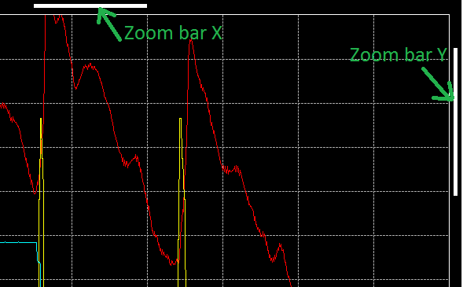

As per its name definition, zoom is a function permitting to zoom a particular graphic area and see traces of this area with greater details.

To zoom a particular area of the graphic, place the mouse cursor at the beginning, or at the end, of the area you want zoom in. Press the right mouse button and then drag the zoom box up the end of the zoom area. When the zoom area is defined click the 'Zoom' command of the contextual menu that pops up on the right mouse button release.

Four different zoom modes are available:
To switch to a different zoom mode, click the 'Zoom Mode'  command of the tool bar or the 'Zoom mode' command of the graphic window contextual menu.
command of the tool bar or the 'Zoom mode' command of the graphic window contextual menu.

An alternative solution is to use zoom mode shortcut keys 'X', 'Y', 'B' for 'Zoom X', 'Zoom Y' and 'Zoom XY'.
Another way to zoom a graphic in and out is to use 'Zoom +'  and 'Zoom -'
and 'Zoom -'  functions. Both of those functions are available either in the tool bar or in the graphic window contextual menu. They are also accessible by pressing '+' and '-' keys of the keyboard for 'Zoom +' and 'Zoom -'.
functions. Both of those functions are available either in the tool bar or in the graphic window contextual menu. They are also accessible by pressing '+' and '-' keys of the keyboard for 'Zoom +' and 'Zoom -'.

With this kind of zoom, the zoom area is defined by a factor applied around the main graphic cursor position. If the main graphic cursor is not set, the center of the screen is used as reference position.
The zoom factor can defined either through the 'Zoom factor'  button of the tool bar or through the 'Zoom factor' item of the graphic window contextual menu.
button of the tool bar or through the 'Zoom factor' item of the graphic window contextual menu.

The zoom factor value represents the magnitude of zoom as a function of X axis values span (for zoom X and zoom XY) and the screen height (for zoom Y and zoom XY).
For example, if 80 seconds of data are plotted and the zoom factor is set to 'x 8', in the case of the 'Zoom X' mode, the X axis values span resulting of the zoom will be eight time smaller than the original span. So 80 / 8 = 10 sec.
In the case of a zoom out, the X axis values span will be eight time bigger than the original one. So 10 x 8 = 80 sec.
The third and last method to zoom in and out is to use 'Zoom min' and 'Zoom max' functions. Those functions are not available in the tool bar (for clarity) but they are in the graphic window contextual menu and through the shortcut keys 'W' and 'N' for 'Zoom min' and 'Zoom max'.
The 'Zoom min' will revert to a zoom magnitude of 1, so the whole data will be shown as if there wasn't any zoom. While 'Zoom max' will do the exact opposite and apply the biggest zoom factor (x 32).
While the zoom function is operating, X and Y zoom bars are shown.

Obviously, the 'Zoom bar X' is shown only if the X axis is zoomed, so it won't be shown in 'Zoom Y' mode and the 'Zoom bar Y' is shown only if the Y axis is zoomed, so it won't be shown in 'Zoom X' mode.
Those zoom bars indicate two things:
If the zoom factor is set to 'x 8', zoom bar X width will be eight time smaller than the whole graphic area width. The same logic is used for the zoom bar Y, with a zoom factor of 8, zoom bar Y height will be eight time smaller than the whole graphic area height.
if the whole data length is 60 seconds and the zoom area starts at the second 30, zoom bar X left position will right on the middle of the graphic area. The same logic applies as well for the zoom bar Y.
Zoom bar X and Y have also second purpose, they can be moved by user in order to move the zooming area.
Place the mouse cursor over one zoom bar and the cursor will transform either in 'east-west arrows' cursor for the zoom bar X or in 'north-south arrows' cursors for the zoom bar Y. Press the mouse right button and drag the zoom bar at the position you want to change the zooming area.
Created with the Personal Edition of HelpNDoc: Easily create Help documents